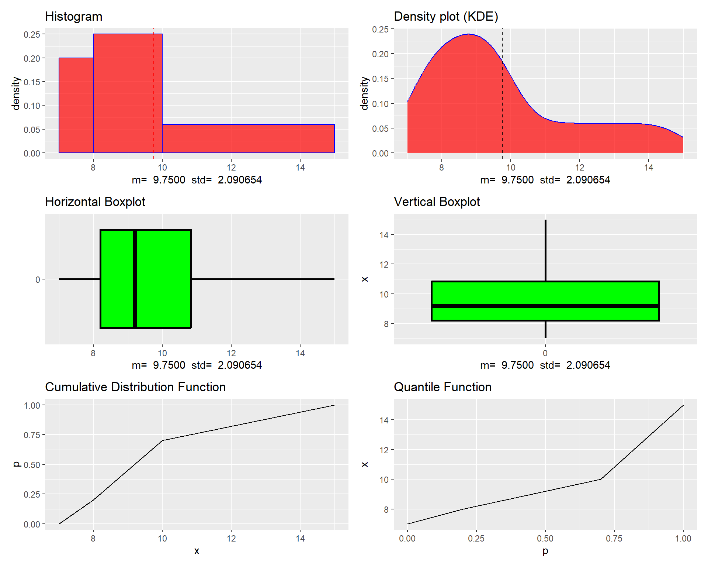
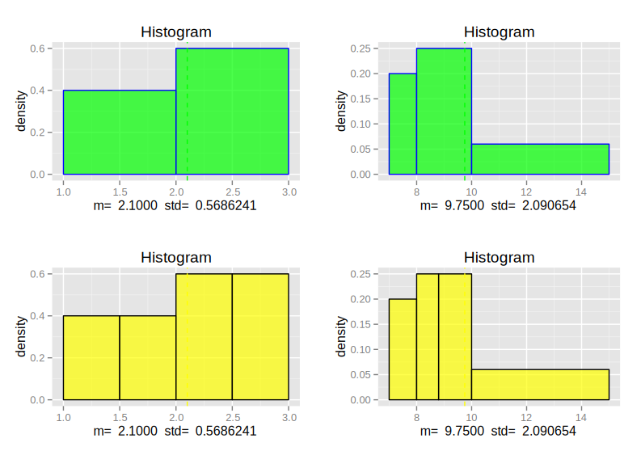
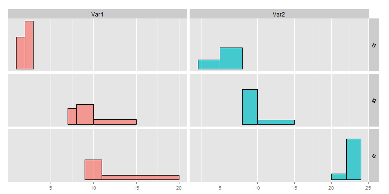
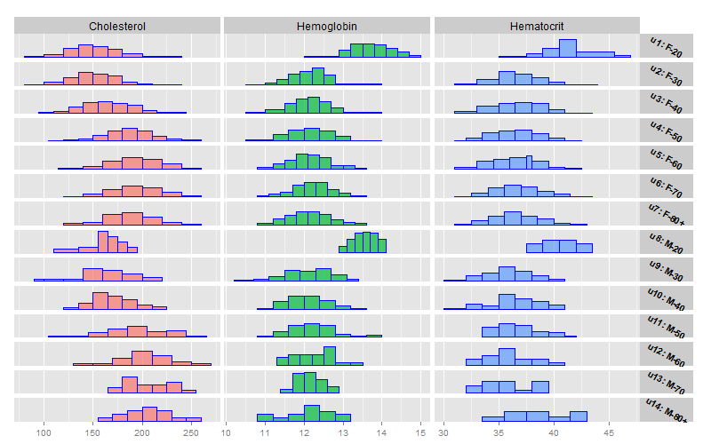
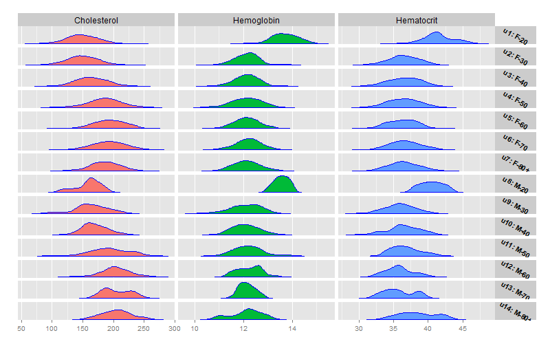
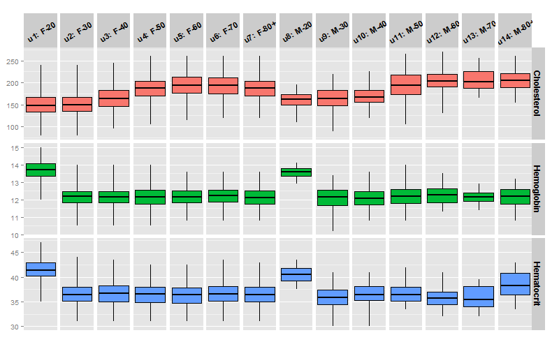
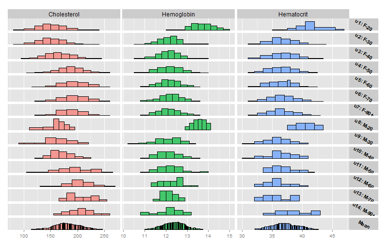
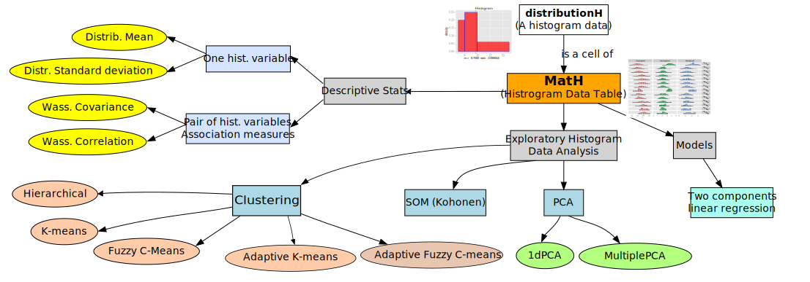

The HistDAWass package defines its core classes and methods using the S4 object-oriented system in R.
This provides a more rigorous and structured approach to object-oriented programming compared to S3.
Main Classes in the Package
distributionH – Represents a single histogram-valued datum (HD).
MatH – A matrix (or data table) of histogram-valued data.
TdistributionH – A histogram-valued datum with a timestamp or time interval (for time series).
TMatH – A matrix of timestamped histogram-valued data.
HTS – A Histogram Time Series (an ordered list of TdistributionH objects).
The distributionH Class: Representing a 1D Histogram
We want to create a new distributionH object that encodes the following histogram:
# Default visualization# plot(mydist) #plots mydistplot(mydist, type="HISTO", col="red", border="blue")#plots a density approximation for mydistplot(mydist, type="DENS", col="red", border="blue") #plots a horizontal boxplot for mydistplot(mydist, type="HBOXPLOT") #plots a vertical boxplot for mydistplot(mydist, type="VBOXPLOT") #plots the cumulative distr. function of mydistplot(mydist, type="CDF") #plots the quantile function of mydistplot(mydist, type="QF")

Obtaining the histogram and the CDF, quantiles and probabilities of a distributionH object
# computes the CDF value for x=9.5compP(object = mydist,q =9.5)## [1] 0.575# computes the quantile for p=0.1compQ(object = mydist,p =0.1) ## [1] 7.5
Other basic statistics for distributionH objects
mydist.mean <-meanH(mydist) #computes the meanmydist.std <-stdH(mydist) #computes the standard deviationmydist.skew <-skewH(mydist) #computes the 3rd stand. centr. momentmydist.kurt <-kurtH(mydist) #computes the 4th stand. centr. moment
Being \(Q(p)\) a quantile function the four measures are, respectively, the histogram version of the following formulas (Gilchrist 2000):
\(L_2\) Wasserstein distance between distributionH objects
Given two distributions having \(f\) and \(g\) as s and, respectively, \(Q_f(p)\) and \(Q_g(p)\) as quantile functions, the (squared) \(L_2\) Wasserstein distance is: \[d_W^2(f,g)=\int\limits_0^1\left[Q_f(p)-Q_g(p)\right]^2dp\](Irpino and Romano 2007) and (Irpino and Verde 2015) showed that \[d_W^2(f,g)=\left(\mu_f-\mu_g\right)^2+\left(\sigma_f-\sigma_g\right)^2+2\sigma_f\sigma_g\left[1-\rho_{QQ}(f,g)\right]\] where \(\rho_{QQ}(f,g)\) is the Pearson correlation between two s: \[\rho_{QQ}(f,s)=\frac{\int\limits_0^1Q_f(p)Q_g(p)dp-\mu_f\mu_g}{\sigma_f\sigma_g} \]
Computing the dot product between two quantile functions of histograms
If two histograms \(H_1\) and \(H_2\) have a same number of bins, say \(k\), and such bins contain respectively the same mass, namely, \(\pi_{\ell,1}=\pi_{\ell,2}\)\(\forall \ell \in k\) the dot product can be computed using the histogram trick as follows: \[\int\limits_0^1Q_f(p)Q_g(p)dp=\sum\limits_{\ell=1}^k\left( c_{\ell,1}c_{\ell,2}+\frac{1}{3}r_{\ell,1}r_{\ell,2}\right)\]
How to recode two hstograms such that thay have the same number of bins and the same masses?
The register method in action
registered <-register(dist1, dist2) #returns a list with 2 registered distributionH objects
X p
Bin_1 [ 1 ; 2 ) 0.4
Bin_2 [ 2 ; 3 ] 0.6
mean = 2.1 std = 0.568624070307733
dist2
X p
Bin_1 [ 7 ; 8 ) 0.2
Bin_2 [ 8 ; 10 ) 0.5
Bin_3 [ 10 ; 15 ] 0.3
mean = 9.75 std = 2.09065380523255
## register the two distributions registered <-register(dist1,dist2)

Back to \(L_2\) Wasserstein distance
Using register method, the (Squared) \(L_2\) Wasserstein distance between two histograms exactly: \[d_W^2(f,g)=\underbrace{\left(\mu_f-\mu_g\right)^2}_{Position}+\underbrace{\underbrace{\left(\sigma_f-\sigma_g\right)^2}_{Size}+\underbrace{2\sigma_f\sigma_g\left[1-\rho_{QQ}(f,g)\right]}_{Shape}}_{Variability}\]
# Squared 2W distanceWassSqDistH(dist1,dist2) #computes the squared L2 Wass. dist.# Components of the sq. distance tooWassSqDistH(dist1,dist2,details=TRUE) #computes with details
A MatH object is a table (a matrix): each row is an individual each column is a histogram variable.
In the package are contained some histogram datasets. One of the most known is the BLOOD dataset, containing 14 typologies of patients of an hospital and observed on three variables (Cholesterol, Hemoglobin, Hematocrit).
rownames is a vector of strings with the labels of the individuals
varnames is a vector of strings with the labels of variables
by.row indicates if the matrix must be filled by row (TRUE) or by column (FALSE this is the default)
An example of creation of a new MatH object
##---- create a list of six distributionH objectsListOfDist<-vector("list",6)ListOfDist[[1]]<-distributionH(c(1,2,3),c(0, 0.4, 1))ListOfDist[[2]]<-distributionH(c(7,8,10,15),c(0, 0.2, 0.7, 1))ListOfDist[[3]]<-distributionH(c(9,11,20),c(0, 0.5, 1))ListOfDist[[4]]<-distributionH(c(2,5,8),c(0, 0.3, 1))ListOfDist[[5]]<-distributionH(c(8,10,15),c(0, 0.75, 1))ListOfDist[[6]]<-distributionH(c(20,22,24),c(0, 0.12, 1))## create a MatH object filling it by columnsMyMAT <-MatH(x=ListOfDist,nrows=3,ncols=2,rownames=c("I1","I2","I3"), varnames=c("Var1","Var2"),by.row=FALSE)#bulding an empty 10 by 4 matrix of histogramsempty.MAT <-MatH(nrows=10,ncols=4)
show and plot method
show(MyMAT) #or simply type MyMAT
a matrix of distributions
2 variables 3 rows
each distibution in the cell is represented by the mean and the standard deviation
Var1 Var2
I1 [m= 2.1 ,s= 0.56862 ] [m= 5.6 ,s= 1.6248 ]
I2 [m= 9.75 ,s= 2.0907 ] [m= 9.875 ,s= 1.7515 ]
I3 [m= 12.75 ,s= 3.3323 ] [m= 22.76 ,s= 0.86933 ]
plot(MyMAT)

More on ploting a MatH (1/3): basic plot
plot(BLOOD, type="HISTO", border="blue") #plots a matrix of histograms

More on plotting a MatH (2/3): density plot
plot(BLOOD, type="DENS", border="blue") #plots a matrix of densities

More on plotting a MatH (3/3): boxplots
plot(BLOOD, type="BOXPLOT") #plots a boxplots

Main methods for the MatH class
For accessing to some basic information
get.MatH.ncols returns the number of columns
get.MatH.nrows returns the number of rows
get.MatH.rownames returns the list of the row-labels
get.MatH.varnames return the list of labels of thevariables (the columns)
get.MatH.stats return a matrix of a basic statistic computed for each cell of the matrix (some examples follow).
An example of get.MatH.stats method
The get.MatH.stats returns a list containing the name of the basic statistics computed and a $mat containing a matrix of numbers with the same dimensions of the MatH object
get.MatH.stats(BLOOD) # the means of the distributions in BLOOD dataset get.MatH.stats(BLOOD,stat='median') # the medians of the distributionsget.MatH.stats(BLOOD,stat='quantile', prob=0.5) #the same as medianget.MatH.stats(BLOOD,stat='min') # minima of the distributions get.MatH.stats(BLOOD,stat='quantile', prob=0) #the same as minget.MatH.stats(BLOOD,stat='max') # maxima of the distributions get.MatH.stats(BLOOD,stat='quantile', prob=1) #the same as maxget.MatH.stats(BLOOD,stat='std') # standard deviations get.MatH.stats(BLOOD,stat='skewness') #skewness indicesget.MatH.stats(BLOOD,stat='kurtosis') #kurtosis indicesget.MatH.stats(BLOOD,stat='quantile',prob=0.05)
Functions useful for maniulating
Useful for the histogram trick
registerMH(MyMat), returns a new MatH object with all the distributions transformed. All the distributions have the same number of bins each one containing the same mass (It is useful for computing exactly the basic statistics based on \(L_2\) Wasserstein metric)
Fuctions for subsetting of for justapposing MatH objects
WH.bind(MAT1, MAT2, byrow=TRUE) attaches MAT2 on the right of MAT1. Naturally, the two MatH objects must have the same number of rows;
WH.bind(MAT1, MAT2, byrow=FALSE) attaches MAT2 under MAT1. Naturally, the two MatH objects must have the same number of colums;
[,] an overloaded method for subsetting a matrix. It returns a new MatH object.
Subsetting example
BLOOD[10:14,1:2] ## a matrix of distributions ## 2 variables 5 rows ## each distibution in the cell is represented by the mean and the standard deviation ## Cholesterol Hemoglobin ## u10: M-40 [m= 170.06 ,s= 20.011 ] [m= 12.092 ,s= 0.52656 ]## u11: M-50 [m= 194.22 ,s= 30.165 ] [m= 12.214 ,s= 0.59708 ]## u12: M-60 [m= 203.36 ,s= 26.223 ] [m= 12.245 ,s= 0.50862 ]## u13: M-70 [m= 205.66 ,s= 22.499 ] [m= 12.15 ,s= 0.33425 ] ## u14: M-80+ [m= 205.48 ,s= 23.537 ] [m= 12.12 ,s= 0.6163 ]BLOOD[2,3] #ATTENTION: returns a 1x1 MatH, and not a distributionH## a matrix of distributions ## 1 variables 1 rows ## each distibution in the cell is represented by the mean and the standard deviation ## Hematocrit ## u2: F-30 [m= 36.497 ,s= 2.1225 ]
Extracting a distributionH from a MatH: how to do it?
Methods based on \(L_2\) Wasserstein norm for summing and multiplying matrices
WH.mat.sum performs a classic cell by cell sum. In particular, the result is a new MatH object having in each cell a distribution associated with the quantile function resulting from the sum of the corresponding quantile functions (It is a sum consistent with the Wasserstein metric). As usual, the matrix must have the same dimensions.
MAT.sum <-WH.mat.sum(MyMAT1,MyMAT2)
WH.mat.prod performs the matrix multiplication of two MatH objects. It returns a matrix of numbers according to the dot product defined for two distributions and associated with the \(L_2\) Wasserstein metric. It is possible also to consider trasposition of matrices.
Methods for univariate and bivariate statistics of histogram variables: the mean distribution
WH.vec.mean computes a distributionH that is the mean distribution of a vector or a matrix of distributions (a MatH object). The mean distribution is computed accordingly to the sum based on the \(L_2\) Wasserstein distance, namely, it is the distribution associated with the average quantile function of the quantile functions of the vector of distributions. It is possible also to assign weights to the elements of vetor in order to obtain a weighted mean.
WH.vec.sum same as WH.vec.mean, but computes only the sum.
WH.vec.mean(BLOOD[,1]) #returns the average distribution of # the first variableWH.vec.mean(BLOOD[,1], w =runif(get.MatH.nrows(MyMAT)))# returns a random weighted average
A graphic example of WH.vec.mean

Methods for univariate and bivariate statistics of histogram variables: variability and association measures
These methods returns a matrix of numbers accordingly to the number of the compared variables. The formulas are those presented in (Irpino and Verde 2015).
Sum of squares
WH.SSQ(MyMAT, w=w) computes the weighted Sum of Squares and the Sum of products of the deviations from the means of a MatH object. The weights are associated to the rows, if missing, the weights are considered equal. The result is square matrix of dimension equal to the number of variables of the MatH object.
WH.SSQ2(MyMAT1, MyMAT2, w=w) computes the weighted Sum of products of the deviations from the means of two MatH objects. The two matrices must have the same number of rows. The result is rectangular matrix with rows equal to the number of variables of the first MatH object and columns the number of variables of the first MatH object.
Using these functions, it is possible to compute covariances and correlations.
Covariance and correlation measures
Variance, covariance and correlation
WH.var.covar(MyMAT, w=w) computes the variance-covariance matrix of a MatH object.
WH.var.covar2(MyMAT1, MyMAT2, w=w) computes a covariance matrix between two MatH objects.
WH.correlation(MyMAT, w=w) computes the correlation matrix of a MatH object.
WH.correlation2(MyMAT1, MyMAT2, w=w) computes the correlation matrix of two MatH objects.
Examples of how to compute basic statistics of variability for a single variable
# the variance of a histogram variableVAR.Choresterol=WH.var.covar(BLOOD[,1])VAR.Choresterol## Cholesterol## Cholesterol 388.1376# the standard deviationSTD.Choresterol=sqrt(VAR.Choresterol)STD.Choresterol## Cholesterol## Cholesterol 19.70121
Analysis methods implemented in HistDAWass

Summary
HistDAWass package for the analysis of histogram data tables
Histograms may not share the same binning
Provides classes for single histograms and tables of histograms
Provides a set of exploratory data analysis tools based on Wasserstein distance
Can be easily extended starting from the basic classes
Contains several histogram datasets (see the help of the package)
Examples of analysis in Brito and Dias (2022). Analysis of Distributional Data (1st ed.). Chapman and Hall/CRC. https://doi.org/10.1201/9781315370545
Irpino, Antonio, and Elvira Romano. 2007. “Optimal Histogram Representation of Large Data Sets: Fisher Vs Piecewise Linear Approximation.” In EGC, edited by Monique Noirhomme-Fraiture and Gilles Venturini, RNTI-E-9:99–110. Revue Des Nouvelles Technologies de l’information. Cépaduès-Éditions.
Irpino, Antonio, and Rosanna Verde. 2015. “Basic Statistics for Distributional Symbolic Variables: A New Metric-Based Approach.”Advances in Data Analysis and Classification 9 (2): 143–75. https://doi.org/10.1007/s11634-014-0176-4.
Questions & Answers
Thank you for your attention! Feel free to ask any questions.
Antonio Irpino Department of Mathematics and Physics University of Campania “L. Vanvitelli”antonio.irpino@unicampania.it